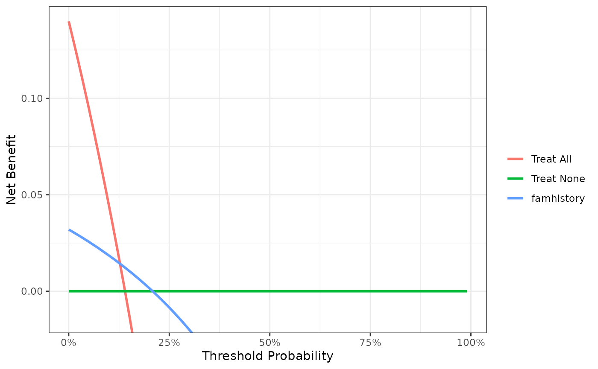
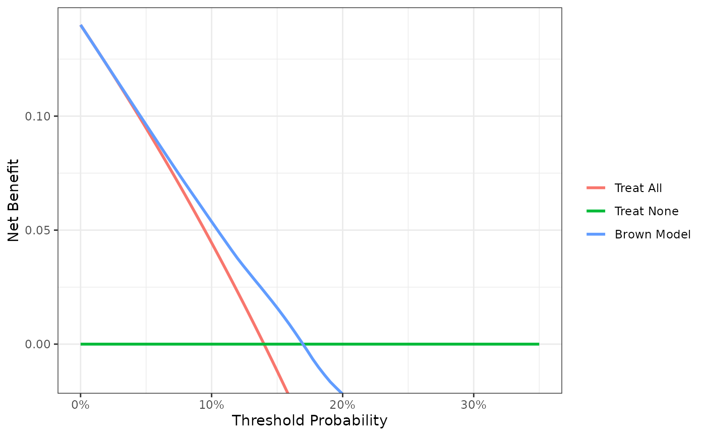

Diagnostic and prognostic models are typically evaluated with measures of accuracy that do not address clinical consequences. Decision-analytic techniques allow assessment of clinical outcomes but often require collection of additional information and may be cumbersome to apply to models that yield a continuous result. Decision curve analysis is a method for evaluating and comparing prediction models that incorporates clinical consequences, requires only the data set on which the models are tested, and can be applied to models that have either continuous or dichotomous results. This document will walk you through how to perform a decision curve analysis (DCA) in many settings, and how to interpret the resulting curves. In DCA prediction models are compared to two default strategies: 1) assume that all patients are test positive and therefore treat everyone, or 2) assume that all patients are test negative and offer treatment to no one. “Treatment” is considered in the widest possible sense, not only drugs, radiotherapy or surgery, but advice, further diagnostic procedures or more intensive monitoring. For more details on DCA, visit . You’ll find the original articles explaining the details of the DCA derivation along with other papers providing more details. Below we’ll walk you through how to perform DCA for binary and time-to-event outcomes
Binary Outcomes
Univariate Decision Curve Analysis
We’ll be working with the example dataset df_binary included with the package. The dataset includes information on 750 patients who have recently discovered they have a gene mutation that puts them at a higher risk for harboring cancer. Each patient has been biopsied and we know their cancer status. It is known that older patients with a family history of cancer have a higher probability of harboring cancer. A clinical chemist has recently discovered a marker that she believes can distinguish between patients with and without cancer. We wish to assess whether or not the new marker does indeed identify patients with and without cancer. If the marker does indeed predict well, many patients will not need to undergo a painful biopsy.
First, we want to confirm family history of cancer is indeed associated with the biopsy result.
mod <- glm(cancer ~ famhistory, df_binary, family = binomial)
tbl <- tbl_regression(mod, exponentiate = TRUE)
tbl| Characteristic | OR1 | 95% CI1 | p-value |
|---|---|---|---|
| famhistory | 1.80 | 1.07, 2.96 | 0.022 |
|
1
OR = Odds Ratio, CI = Confidence Interval
|
|||
Via logistic regression with cancer as the outcome, we can see that family history is related to biopsy outcome OR 1.80 (95% CI 1.07, 2.96; p=0.022). The DCA can help us address the clinical utility of using family history to predict biopsy outcome.
dca(cancer ~ famhistory, df_binary)
#> Assuming '1' is [Event] and '0' is [non-Event]
#> Printing with `autoplot(x, type = 'net_benefit', smooth = FALSE)`
First, note that there are many threshold probabilities shown here that are not of interest. For example, it is unlikely that a patient would demand that they had at least a 50% risk of cancer before they would accept a biopsy. Let’s do the DCA again, this time restricting the output to threshold probabilities a moreclinically reasonable range, between 0% and 35%.
dca(cancer ~ famhistory, df_binary, thresholds = seq(0, 0.35, length.out = 100))
#> Assuming '1' is [Event] and '0' is [non-Event]
#> Printing with `autoplot(x, type = 'net_benefit', smooth = FALSE)`
Now that the graph is showing a more reasonable range of threshold probabilities, let’s assess the clinical utility of family history alone. We can see here that although family history is significantly associated with biopsy outcome, it only adds value to a small range of threshold probabilities near 13% - 20%. If your personal threshold probability is 15% (i.e. you would undergo a biopsy if your probability of cancer was greater than 15%), then family history alone can be beneficial in making the decision to undergo biopsy. However, if your threshold probability is less than 13% or higher than 20%, then family history adds no more benefit than a biopsy all, or biopsy none scheme.
Multivariable Decision Curve Analysis
Evaluation of New Models
We wanted to examine the value of a statistical model that incorporates family history, age, and the marker. First we will build the logistic regression model with all three variables, and second we would have saved out the predicted probability of having cancer based on the model. Note that in our example data set, this variable actually already exists so it wouldn’t be necessary to create the predicted probabilities once again.
glm(cancer ~ marker + age + famhistory, df_binary, family = binomial) %>%
broom::augment(newdata = df_binary, type.predict = "response")
#> # A tibble: 750 x 9
#> patientid cancer dead risk_group age famhistory marker cancerpredmarker
#> <dbl> <dbl> <dbl> <chr> <dbl> <dbl> <dbl> <dbl>
#> 1 1 0 0 low 64.0 0 0.776 0.0372
#> 2 2 0 0 high 78.5 0 0.267 0.579
#> 3 3 0 0 low 64.1 0 0.170 0.0216
#> 4 4 0 0 low 58.5 0 0.0240 0.00391
#> 5 5 0 0 low 64.0 0 0.0709 0.0188
#> 6 6 0 0 intermediate 65.7 0 0.428 0.0426
#> 7 7 0 1 intermediate 71.9 0 0.942 0.296
#> 8 8 1 0 intermediate 66.6 0 2.91 0.387
#> 9 9 0 0 low 64.3 0 0.715 0.0373
#> 10 10 0 0 intermediate 65.7 0 0.129 0.0320
#> # … with 740 more rows, and 1 more variable: .fitted <dbl>We now want to compare our different approaches to cancer detection: biopsying everyone, biopsying no-one, biopsying on the basis of family history, or biopsying on the basis of a multivariable statistical model including the marker, age and family history of cancer.
dca(cancer ~ famhistory + cancerpredmarker, df_binary, thresholds = seq(0, 0.35, length.out = 100))
#> Assuming '1' is [Event] and '0' is [non-Event]
#> Printing with `autoplot(x, type = 'net_benefit', smooth = FALSE)`
The key aspect of decision curve analysis is to look at which strategy leads to the largest net benefit (i.e. the “highest” line), which in this example would correspond to the model that includes age, family history of cancer, and the marker. It is clear that, across the range of reasonable threshold probabilities, one cannot go wrong basing decisions on this multivariate model: it is superior, and unlike any alternative strategy, it is never worse.
A few points are worth noting. First, look at the green line, the net benefit for “treat all”, that is, biopsy everyone. This crosses the y axis at the prevalence. Imagine that a man had a risk threshold of 14%, and asked his risk under the “biopsy all” strategy. He would be told that his risk was the prevalence (14%). When a patient’s risk threshold is the same as his predicted risk, the net benefit of biopsying and not biopsying are the same. Second, the decision curve for the binary variable (family history of cancer, the brown line) crosses the “biopsy all men” line at 1 – negative predictive value and again, this is easily explained: the negative predictive value is 87%, so a patient with no family history of cancer has a probability of disease of 13%; a patient with a threshold probability less than this – for example, a patient who would opt for biopsy even if risk was 10% - should therefore be biopsied even if he/she had no family history of cancer. The decision curve for a binary variable is equivalent to biopsy no-one at the positive predictive value. This is because for a binary variable, a patient with the characteristic is given a risk at the positive predictive value.
Evaluation of Published Models
Imagine that a model was published by Brown et al. with respect to our cancer biopsy data set. The authors reported a statistical model with coefficients of 0.75 for a positive family history of cancer; 0.26 for each increased year of age, and an intercept of -17.5. To test this formula on our dataset:
df_updated <-
df_binary %>%
mutate(
# Use the coefficients from the Brown model
logodds_Brown = 0.75 * (famhistory) + 0.26 * (age) - 17.5,
# Convert to predicted probability
phat_Brown = exp(logodds_Brown) / (1 + exp(logodds_Brown))
)
# Run the decision curve
dca(cancer ~ phat_Brown, df_updated, thresholds = seq(0, 0.35, length.out = 100))
#> Assuming '1' is [Event] and '0' is [non-Event]
#> Printing with `autoplot(x, type = 'net_benefit', smooth = FALSE)`
This decision curve suggests that although the model might be useful in the most risk averse patients, it is actually harmful in patients with more moderate threshold probabilities. As such, the Brown et al. model should not be used in clinical practice. This effect, a model being harmful, occurs due to miscalibration, that is, when patients are given risks that are too high or too low. Note that miscalibration only occurs rarely when models are created and tested on the same data set, such as in the example where we created a model with both family history and the marker.
Joint or Conditional Tests
Many decisions in medicine are based on joint or conditional test results. A classic example is where patients are categorized on the basis of a test as being at high, low or intermediate risk. Patients at high risk are referred immediately for treatment (in our example biopsied); patients at low risk are reassured and advised that no further action is necessary; patients at intermediate risk are sent for an additional test, with subsequent treatment decisions made accordingly.
Imagine that for our example there was a previous test that categorized our patients as high, low, and intermediate risk of cancer and we wanted to incorporate our marker. There are five clinical options:
- Biopsy everyone
- Biopsy no-one
- Biopsy everyone that was determined to be at high risk of cancer; don’t use the marker
- Measure the marker for everyone, then biopsy anyone who is either at high risk of cancer or who was determined to have a probability of cancer past a certain level, based on the marker (i.e. joint approach)
- Biopsy everyone at high risk; measure the marker for patients at intermediate risk and biopsy those with a probability of cancer past a certain level, based on the marker (i.e. conditional approach)
Decision curve analysis can incorporate joint or conditional testing. All that is required is that appropriate variables are calculated from the data set; decision curves are then calculated as normal. First we would create the variables to represent our joint and conditional approach. For our example, let us use 0.15 as the cutoff probability level for patients who had their marker measured and should be biopsied.
df_updated <-
df_updated %>%
mutate(
# Create a variable for the strategy of treating only high risk patients
# This will be 1 for treat and 0 for don’t treat
high_risk = ifelse(risk_group == "high", 1, 0),
# Treat based on Joint Approach
joint = ifelse(risk_group == "high" | cancerpredmarker > 0.15, 1, 0),
# Treat based on Conditional Approach
conditional = ifelse(risk_group == "high" |
(risk_group == "intermediate" & cancerpredmarker > 0.15), 1, 0)
)Now that we have the variables worked out, we can run the decision curve analysis.
dca(cancer ~ high_risk + joint + conditional, df_updated, thresholds = seq(0, 0.35, length.out = 100))
#> Assuming '1' is [Event] and '0' is [non-Event]
#> Printing with `autoplot(x, type = 'net_benefit', smooth = FALSE)`
This appears to show that the joint test is the better option for the range of threshold probabilities from 5% - 24% since it has the highest net benefit across that range. Less than 5%, the clinical option of treating all would be superior to any other option, though rarely would treatment thresholds be so low. From 28%-35%, the conditional test would be a slightly better option, and in between the two ranges, the joint and conditional tests are comparable. The obvious disadvantage of the joint test is that the marker needs to be measured for everyone, and such tests may be expensive and time consuming.